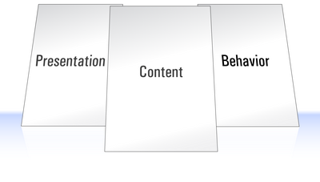

Development principles, patterns and practices
- from good to great -
Anders Jönsson
This presentation will be like:
(We have pieces to eat)
Hopefully it can act as a catalyst for further discussions within the team
Agenda
- Introduction
- Pair programming
-
TDD/BDD
- Concepts
- Unit/integration/aac tests
- TestText
-
Coding
- Patterns and principles
- Guidelines
- Code sharing
- Static code analysis
- Continues integration
- Wrap up
Ask questions whenever you want
Introduction
Why?
Pair programming
Pair Programming: an idea from the depths of hell that actually works surprisingly well." -- Animesh Karna
Higher quality and more fun
(Research on pair programming, Making Software by Oram & Wilson)Roles
Driver
writes the code
Navigator
keeps track of where we are and where we are heading
You should
- Switch roles often
- Stop and reflect on the problem
- Research
- Discuss different way of solving the problem
- Switch pair every day (keep one as story responsible)
You should NOT
- Pick on the drivers code while writing
- Grabbing the keyboard from the driver
- Tweeting, mailing, texting, etc while you are paring
When to pair
Mindset: all the code that goes in to production
Optional to pair on trivial tasks (e.g. updating documentations, batch updates, etc)
It's not so easy, but very fun
Further reading
- http://c2.com/cgi/wiki?PairProgrammingPingPongPattern
- http://oredev.org/videos/the-pair-programming-show
- http://pragprog.com/magazines/2011-06/pair-programming-in-a-flash
- http://martinfowler.com/bliki/PairProgrammingMisconceptions.html
TDD/BDD
TDD = Test Driven Development
BDD = Behavior Driven Development
What it is
It's a design process (with the test suite as a bi-product)
What it's not
It's not a process of writing absurd/silly test
TDD vs BDD?
Process

* tests
- Unit tests
- Integration tests
- Automated acceptance tests
Enough of that, what can we actually use in our environment?
- Automated acceptance tests
- Page object pattern
Further reading:
- http://dannorth.net/introducing-bdd/
- http://specificationbyexample.com/key_ideas.html
- http://butunclebob.com/ArticleS.UncleBob.TheThreeRulesOfTdd
- http://code.google.com/p/selenium/wiki/PageObjects
TextTest
Can be used in environments where TDD/BDD is hard or "impossible"

Demo
A simplified example of how it can look likeBefore refactoring
LOG: calculate price LOG: adjust price LOG: adjust price for VIP LOG: calculation done
After refactoring
LOG: calculate price LOG: adjust price LOG: calculation done
Error: missing "LOG: adjust price for VIP"
We must have done something wrong...
Coding
What can we do in this environment?
Guidelines
More important than you may think
Establish coding guidelines and follow them
Some guidelines
- https://code.google.com/p/google-styleguide/
- http://isobar-idev.github.com/code-standards/
Patterns and principles
- Principles
- Patterns
- Code smells
The ones we are going to talk about today is just a tip of the...
S.O.L.I.D
Separation of Concerns
Is a design principle that comprises the process of separating a computer program into distinct features that overlap in functionality as little as possible
Single Responsibility Principle

States that every class should have a single responsibility, and that responsibility should be entirely encapsulated by the class
Feature envy
The whole point of objects is that they are a technique to package data with the processes used on that data. A classic [code] smell is a method that seems more interested in a class other than the one it is in. The most common focus of the envy is the data/Cunningham
Demo
Can you find the envy part in this code?
(this example will not work in your environment, but I think you can get the picture)
State pattern
This pattern is used in computer programming to represent the state of an object. This is a clean way for an object to partially change its type at runtime
Demo
Further reading:
- http://butunclebob.com/ArticleS.UncleBob.PrinciplesOfOod
- http://c2.com/cgi/wiki?DontRepeatYourself
- http://en.wikipedia.org/wiki/Software_design_pattern
- http://c2.com/cgi/wiki?CodeSmell
- http://c2.com/cgi/wiki?DontRepeatYourself
Code sharing (NOT review)

It's about
- Overall knowledge sharing (about the code and the domain)
- Learning from each others (coding, design, technologies, etc.)
- Increase consistency in the code base
- Point out good things
- Get a collective code ownership
Static code analysis
Before you commit, you could use tools like jshint and jslint
Further reading:
- http://jshint.com
- http://jslint.com
- https://github.com/philbooth/complexityReport.js
Continues integration
Some of the benefits
- reduce risks
- team code cohesion
- deployable software
On every commit you can
- Build
- Run tests
- Run static code analysis
- Deploy to a machine
- Create documentation
- ...
You can also
- Create package for production
- Tag and branch
- ...
Example of some CI products:
- http://www.jetbrains.com/teamcity/
- http://jenkins-ci.org/
Example of some build languages:
- http://gruntjs.com/
- http://rake.rubyforge.org/
- http://ant.apache.org/
Further reading:
- http://martinfowler.com/articles/continuousIntegration.html
- http://www.slideshare.net/drluckyspin/continuous-integration
- http://continuousdelivery.com/
Wrap up
Decide actions
I use this everyday
- http://jsbin.com
- http://jspref.com
- http://pivotal.github.com/jasmine/
- http://phantomjs.org/
Books
- Foundations of Programming (free e-book) by Karl Seguin
- The Pragmatic Programmer by Andy Hunt
- Clean Code: A Handbook of Agile Software Craftsmanship by Robert C Martins
- The Clean Coder: A Code of Conduct for Professional Programmers by Robert C Martins
Questions?
Thank you for your time!
All images are copyrighted by their respective copyright owners:
- Pair programming, http://devblog.point2.com/2010/02/19/pair-programming-anti-patterns/
- TDD, http://reddevnews.com/articles/2007/11/01/testdriven-development-tdd.aspx
- Hands tied, http://writeitsideways.com/should-writers-rethink-butt-in-chair-mentality/
- Iceberg, http://writeitsideways.com/should-writers-rethink-butt-in-chair-mentality/
- Single Responsibility Principle, http://el-aephau.blogspot.se/2012/05/massage-clients-rights-responsibilities_29.html
- Separation of Concerns, http://www.sitepoint.com/simply-javascript/
- Static code analysis, http://www.zimbio.com/pictures/Yl_RIJj-lMV/Customs+Border+Agents+Inspect+Valentine+Day/vsiN3J89efy/Lizbeth+Miranda
- Continues integration, http://wtrocki.blogspot.se/
- Gott & blandat, http://grabbes.se/gott-blandat-till-filmen/
- States, http://www.usborderlaw.com/uscis_doctors.html
- Wrap up (bender), http://theinfosphere.org/Bender_Bending_Rodr%C3%ADguez
- Coding Cup, http://www.zazzle.se/jag_skulle_kodifierar_ganska_muggen-168603648854109090
- Questions, http://www.vulture.com/2012/06/10-open-questions-after-watching-prometheus.html